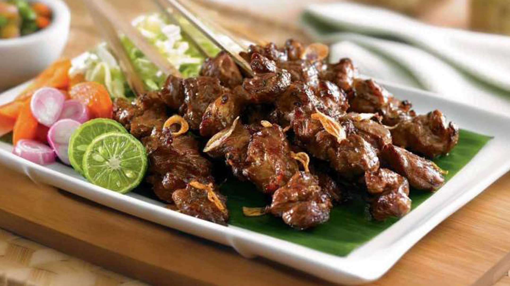

Sate Madura
Sate Ayam Madura adalah makanan jenis sate yang terbuat dari bahan dasar daging ayam dan diolah dengan racikan bumbu yang khas dari Madura, Jawa Timur. Sate Ayam Madura merupakan salah satu makanan tradisional yang sangat terkenal di Indonesia. Hampir semua daerah di Indonesia terdapat penjual makanan ini.
Sate Ayam Madura ini bila dilihat hampir sama dengan sate ayam di Indonesia pada umumnya, namun yang menjadi keistimewaan dari Sate Ayam Madura ini adalah rasa bumbu kacangnya yang sangat khas. Selain itu daging satenya juga terasa sangat empuk dan memiliki aroma yang sedap dan menggugah selera.
Sate Ayam Madura ini memiliki cita rasa yang sangat khas. Salah satu yang membuat sate ayam ini terasa nikmat adalah bumbu kacangnya. Bumbu kacang pada Sate Ayam Madura ini biasanya menggunakan kemiri sebagai bumbu tambahannya, sehingga memberikan cita rasa yang khas. Selain itu daging satenya terasa empuk dan memiliki aroma yang sangat khas sehingga menambah kenikmatan pada makanan satu ini.